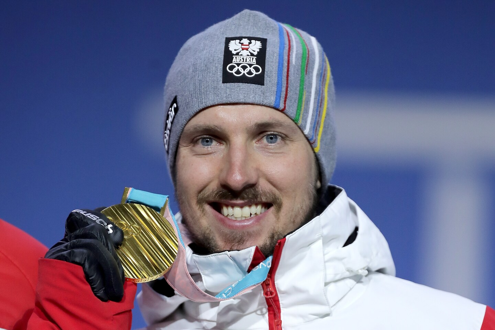
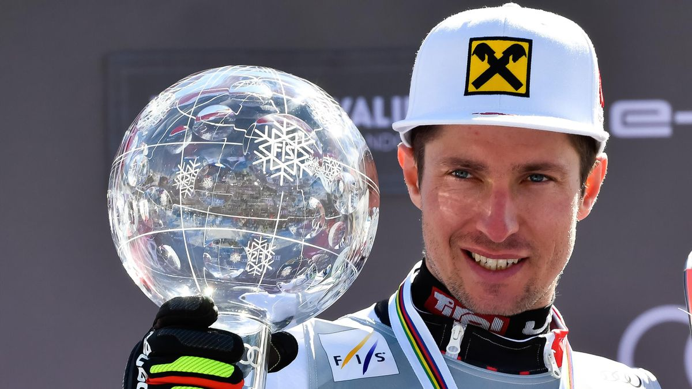
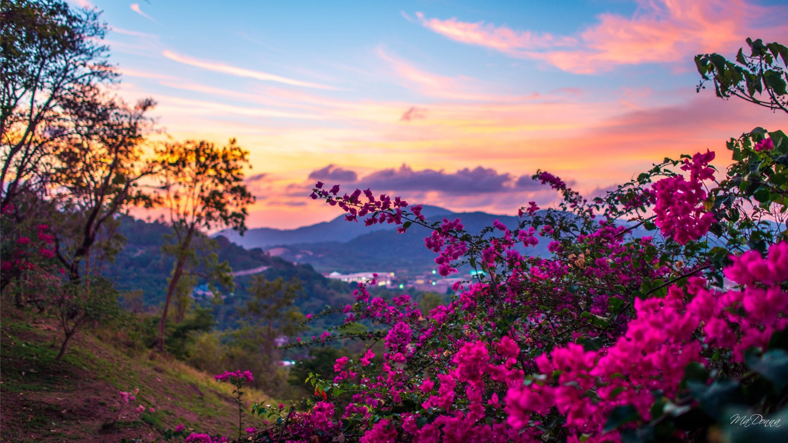
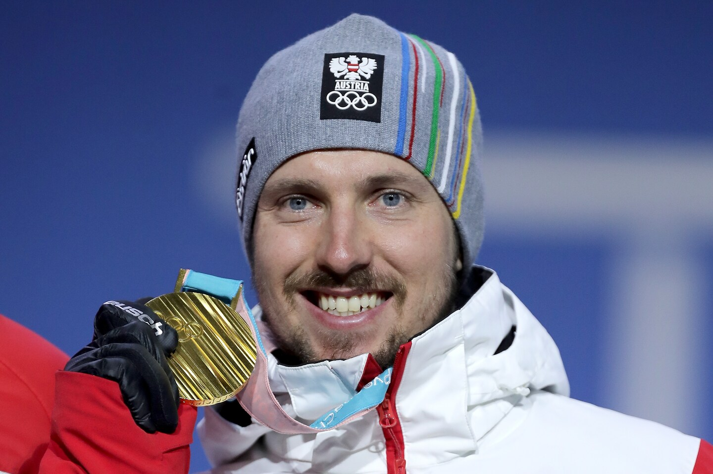
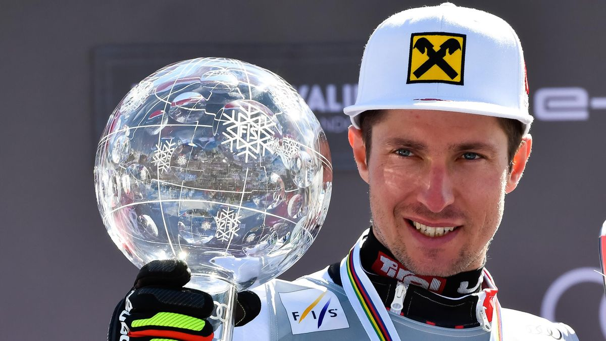
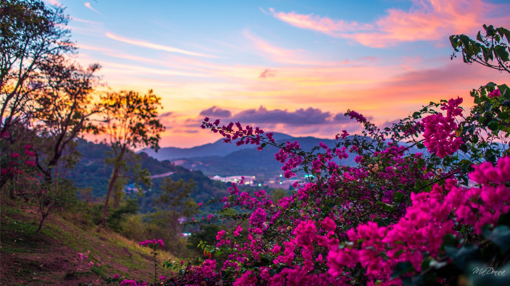

Über Marcel Hirscher
Marcel Hirscher ist ein österreichischer Skifahrer, der zu den erfolgreichsten alpinen Skirennläufern aller Zeiten gehört. Er wurde am 2. März 1989 in Annaberg-Lungötz, Österreich, geboren.
Erfolge
- Sieger des Gesamtweltcups der alpinen Skirennläufer 8 Mal (2012–2019)
- Gewinner von 11 Goldmedaillen bei Weltmeisterschaften
- Olympiasieger in den Disziplinen Slalom und Riesenslalom bei den Olympischen Winterspielen 2018
Frühes Leben und Karriere
Marcel Hirscher begann im Alter von zwei Jahren mit dem Skifahren. Sein Talent wurde früh erkannt, und er wurde in die österreichische Skijugendmannschaft aufgenommen. Seit seinem Debüt im Weltcup im Jahr 2007 hat er zahlreiche Siege und Auszeichnungen erzielt.
Persönliches
Marcel Hirscher ist für seine bescheidene Persönlichkeit und seine Entschlossenheit auf der Skipiste bekannt. Neben dem Skifahren interessiert er sich für Bergsteigen und Mountainbiken.